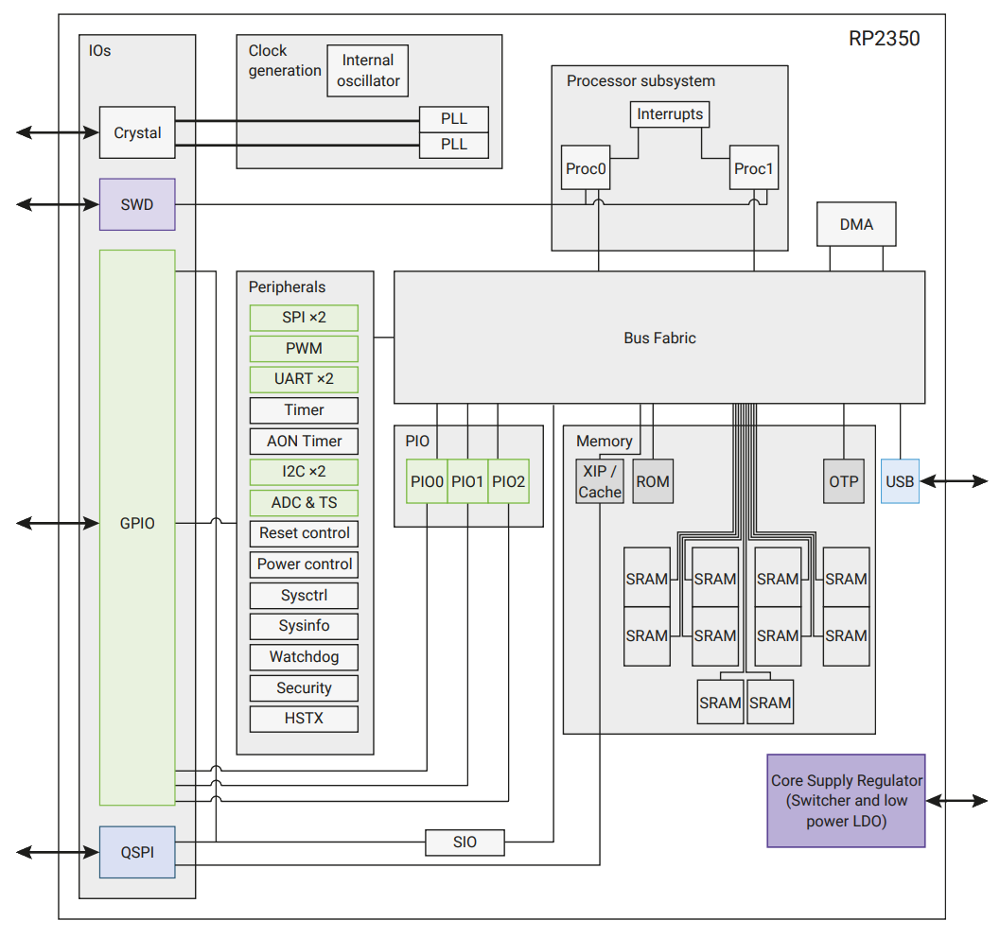
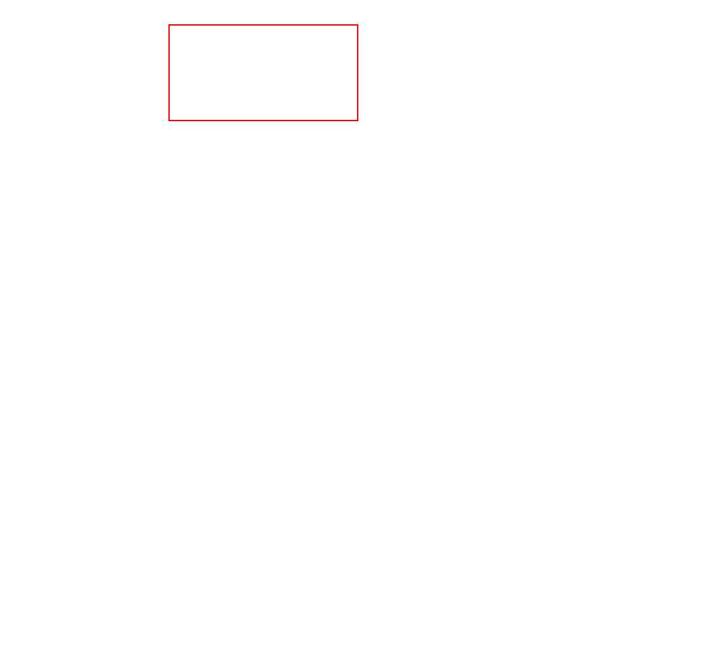
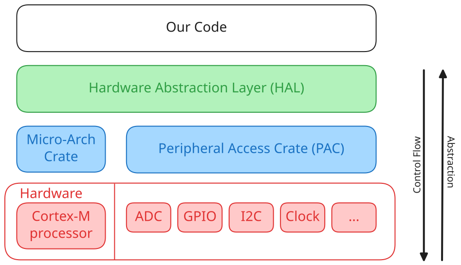
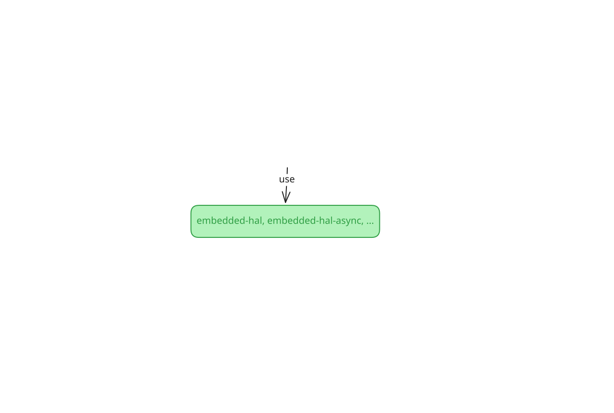

## Embedded Rust Workshop #### A Practical Hands-On with `embassy`<br>and the Raspberry Pi Pico 2 --- ### What You're Gonna Do Today - Listen to a short introduction (in progress) <!-- .element: class="fragment" --> - Get your Pico 2 hardware <!-- .element: class="fragment" --> - Make it blink <!-- .element: class="fragment" --> - Make it notice you <!-- .element: class="fragment" --> - Break the workshop WiFi (probably) <!-- .element: class="fragment" --> - Go at your own pace <!-- .element: class="fragment" --> --- ### Meet the Pico 2 <div class="r-stack r-stretch" style="justify-content: center;"> <p></p> <p></p> <img class="fragment current-visible" data-fragment-index="3" src="static/rp2350_memory.png" alt="RP2350" style="margin: 0; padding: 0;" /> <img class="fragment current-visible" data-fragment-index="4" src="static/rp2350_gpio.png" alt="RP2350" style="margin: 0; padding: 0;" /> <img class="fragment current-visible" data-fragment-index="5" src="static/rp2350_peripherals.png" alt="RP2350" style="margin: 0; padding: 0;" /> <img class="fragment current-visible" data-fragment-index="6" src="static/rp2350_serial.png" alt="RP2350" style="margin: 0; padding: 0;" /> <img class="fragment current-visible" data-fragment-index="7" src="static/rp2350_adc.png" alt="RP2350" style="margin: 0; padding: 0;" /> <img class="fragment fade-in" data-fragment-index="8" src="static/rp2350_watchdog.png" alt="RP2350" style="margin: 0; padding: 0;" /> </div> <p style="font-size: large; margin: 0; padding: 0;"><it> Source: <a href="https://datasheets.raspberrypi.com/rp2350/rp2350-datasheet.pdf">RP2350 Datasheet</a>, Figure 1 </it></p> Notes: - The RP2350 contains (non-exhaustive): - two independent Cortex-M33 processors (top right, which in turn contain all of the circuitery discussed before. Note that this means that the RP2350 can do multithreading), - a hardware clock (top left), - \[a direct memory access (DMA) controller (top right),\] - a bunch of memory (bottom right), including - the boot ROM, which contains the microcontroller version of your computer's BIOS, - 520 kB of RAM that you can use in your program, and - some read-only memory with things like a unique serial number, - two banks of general-purpose IO (GPIO) pins (left) that you can use to connect to other chips, and - a bunch of smaller processors called "peripherals" (middle left), which help you with various things like - communicating over GPIO (implementing serial protocols like I2C, SPI, or UART), - modulating and converting inputs / outputs (e.g. measuring analog voltages or temperatures), or - making sure your code doesn't get stuck (watchdog). --- <!-- .slide: data-transition="none" --> ### Working with `#[no_std]` <img class="r-stretch" src="static/tiered_std.png" alt="Tiered STD" style="margin: 0; padding: 0;" /> <p style="font-size: large; margin: 0; padding: 0;"><it> Based on <a href="https://google.github.io/comprehensive-rust/bare-metal/no_std.html">Comprehensive Rust</a> </it></p> Notes: - `HashMap` depends on RNG. - `std` re-exports the contents of both `core` and `alloc`. --- #### The Embedded Rust Abstraction Hierarchy <div class="svg-stack"> <p></p> <img style="max-width: 85%;" src="static/embedded_hierarchy_with_embassy_step2.svg" alt="Embedded Hierarchy with embassy" class="fragment" data-fragment-index="1"/> </div> <p style="font-size: large; margin: 0; padding: 0;" class="fragment" data-fragment-index="0"><it> Source: <a href="https://docs.rust-embedded.org/book/start/registers.html">Embedded Rust Book</a>, modified by us </it></p> --- ### `embassy` Overview <div class="svg-stack"> <img style="height: 100%; width: auto; max-width: 100%;" src="static/embassy-overview-step1.svg" class="fragment" data-fragment-index="0"> <img style="height: 100%; width: auto; max-width: 100%;" src="static/embassy-overview-step2.svg" class="fragment" data-fragment-index="1"> <p></p> <img style="height: 100%; width: auto; max-width: 100%;" src="static/embassy-overview-step4.svg" class="fragment" data-fragment-index="3"> <img style="height: 100%; width: auto; max-width: 100%;" src="static/embassy-overview-step5.svg" class="fragment" data-fragment-index="4"> <img style="height: 100%; width: auto; max-width: 100%;" src="static/embassy-overview-step6.svg" class="fragment" data-fragment-index="5"> <img style="height: 100%; width: auto; max-width: 100%;" src="static/embassy-overview-step7.svg" class="fragment" data-fragment-index="6"> <img style="height: 100%; width: auto; max-width: 100%;" src="static/embassy-overview-step8.svg" class="fragment" data-fragment-index="7"> </div> Notes: - Feature-list: https://embassy.dev/book/#_features_2 - embassy is not an OS: No preemption, built-in hardware abstraction, etc.
Instructions and Materials:
https://github.com/Rust-Dortmund/pico-2-workshop-2026/